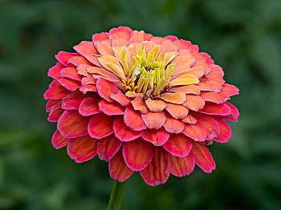

Main Page
Contents
Current Events
Random Article
About Wikipedia
Contact us
Donate
Contribute
Help
Learn to edit
Community Portal
Recent changes
Upload
Tools
What links here
Related changes
Special pages
Permanent link
Page information
Wikidata item
Print/export
Download as PDF
Printable version
In other projects
Wikimedia Commons
MediaWiki
Meta-Wiki
Multilingual Wikisource
Wikispecies
Wikibooks
Wikidata
Wikimania
Wikinews
Wikiquote
Wikisource
Wikiversity
Wikivoyage
Wiktionary
Languages
العربية
বাংলা
Български
Bosanski
Català
Čeština
Dansk
Deutsch
Eesti
Ελληνικά
Español
Esperanto
Euskara
فارسی
Français
Galego
한국어
Hrvatski
Bahasa Indonesia
Italiano
עברית
ქართული
Latviešu
Lietuvių
Magyar
Македонски
Bahasa Melayu
Nederlands
日本語
Norsk bokmål
Norsk nynorsk
Polski
Português
Română
Русский
Simple English
Slovenčina
Slovenščina
Српски / srpski
Srpskohrvatski / српскохрватски'
Suomi
Svenska
ไทย
Türkçe
Українська
Tiếng Việt
中文
Complete list
Main page Talk
Not logged in Talk Contributions Create account Log in
Read View source View history
Welcome to Wikipedia,
the free encyclopedia that anyone can edit. 6,422,166 articles in English
From today's featured article
In the news today
- Siaosi Sovaleni (pictured) is elected as prime minister by the Legislative Assembly of Tonga.
- A fuel tanker truck explodes in Cap-Haïtien, Haiti, killing at least 75 people.
- In Canadian football, the Winnipeg Blue Bombers defeat the Hamilton Tiger-Cats to win the Grey Cup.
- In motor racing, Max Verstappen wins the Formula One World Championship, while Mercedes win the constructors' title. Ongoing: COVID-19 pandemic
Recent deaths: Speedy Duncan . bell Looks . Jethro . Riccardo Ehrman Leland Wilkinson . Abraham Lunggana
Did you know.....
- ... that the runway at the Winter Garden Theatre (interior pictured) was nicknamed the "bridge of thighs" after lightly clothed showgirls paraded down it?
- ... that Belinda Archer won Australia's first World Artistic Gymnastics Championships team medal in 2003?
- ... that even though it was "the best thing to happen to the Atari", the XF551 floppy disk drive was only released after Nintendo sued them?
- ... that after Sydney Parkinson died on the return leg of the first voyage of James Cook, some of his drawings were engraved for publication in his Journal of a Voyage to the South Seas?
- ... that three schools in Virginia were named after Daniel Webster Davis?
- .. that 92 percent of complaint calls about the Scanner Price Accuracy Code are not legitimate complaints?
- ... that after getting drunk and verbally abusing Cap Anson at a baseball game during his off day, Charlie Bartson was released from the Chicago Pirates?
- .. that Birds Aren't Real?
On this day
Today's featured picture

Zinnia elegans, known as the youth-and-age, common zinnia or elegant
zinnia,
is
an
annual
flowering plant in the daisy family, Asteraceae. It is native to Mexico but grown as an
ornamental
in
many
places and naturalised in a number of countries, including scattered locations in South and
Central
America,
the
West Indies, the United States, Australia and Italy. This photograph of a Z. elegans bloom in a
garden
in
Bamberg, Germany, was stacked from fifteen separate images.
Photograph credit: Reinhold Möller
Recently featured: Kabukichō . Camp: Notes on Fashion . Drottningholm Palace
Archive. More featured pictures
Archive. More featured pictures
Other Areas of Wikipedia
- Community portal -Bulletin board, projects, resources and activities covering a wide range of Wikipedia areas.
- Help Desk-Ask questions about using Wikipedia.
- Reference Desk-Serving as virtual librarians, Wikipedia volunteers tackle your questions on a wide range of subjects.
- Site Desk-Announcements, updates, articles and press releases on Wikipedia and the Wikimedia Foundation.
- Teahouse-To ask your first basic questions about contributing to Wikipedia.
- Village Pump- For discussions about Wikipedia itself, including areas for technical issues and policies.
Wikipedia's sister projects
Wikipedia is hosted by the Wikimedia Foundation, a non-profit organization that also hosts a range of other projects:Free media repository
Free textbooks and manuals
Collection of quotations
Free learning tools
MediaWiki
Wiki software development
 Wikidata
Wikidata
Free knowledge base
Wikisource
Free-content library
Wikivoyage
Free travel guide
Wiki software development
Free knowledge base
Wikisource
Free-content library
Wikivoyage
Free travel guide
Wikimedia project coordination
Free-content news
Wikispecies
Directory of species
Dictionary and thesaurus